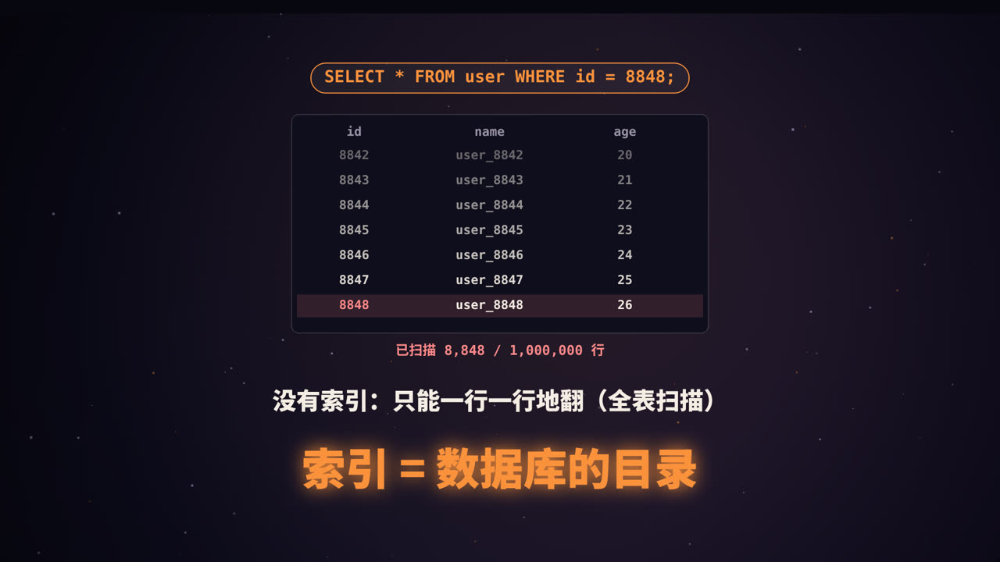
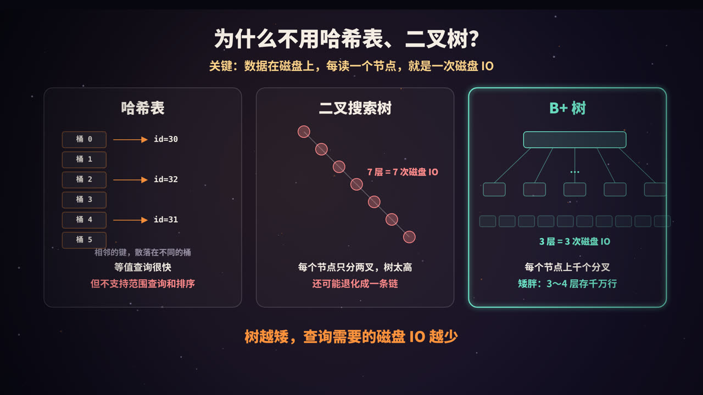
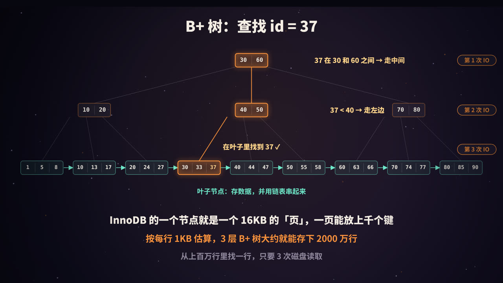
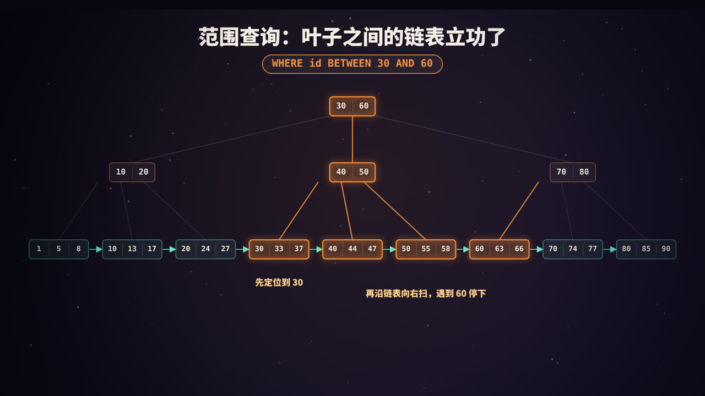
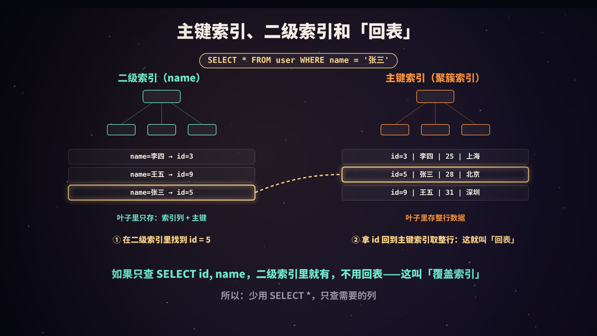

没有索引会怎样
在一张有一百万行的用户表里执行：
SELECT * FROM user WHERE id = 8848;
如果 id 上没有任何索引，数据库只能从第一行开始，一行一行地比对，直到找到为止，最坏情况要读完整张表。这叫全表扫描。
索引就像一本书的目录：数据库按照某一列提前把数据排好序，组织成便于查找的结构，查询时直接定位，不用逐页翻找。MySQL 的 InnoDB 存储引擎，用的就是 B+ 树。
关键约束：数据在磁盘上

理解 B+ 树，要先理解一个前提：数据库的数据存放在磁盘上，而磁盘的读取速度比内存慢几个数量级。
InnoDB 以页（page）为单位从磁盘读取数据，默认每页 16KB。索引树的每个节点就是一个页，读一个节点，就是一次磁盘 IO（如果这个页已经被缓存在内存的 Buffer Pool 里，就可以省掉这次 IO）。
所以，评价一种索引结构好不好，核心看：找到一条数据，要读多少个节点？ 换句话说，就是树有多高。
几种候选结构的比较
| 结构 | 优点 | 缺点 |
|---|---|---|
| 哈希表 | 等值查询非常快 | 数据无序，不支持范围查询、排序和前缀匹配 |
| 二叉搜索树 | 有序，支持范围查询 | 每个节点只有两个分叉，树很高；插入有序数据时可能退化成链表 |
| 平衡二叉树 / 红黑树 | 不会退化 | 依然是二叉，一百万条数据大约需要 20 层，也就是约 20 次 IO |
| B 树 | 多叉，矮胖 | 每个节点都存数据，一页能放的键变少；范围查询需要在树中来回遍历 |
| B+ 树 | 多叉、矮胖、叶子有序相连 | 写入时需要维护树结构，有一定开销 |
B+ 树的结构

B+ 树有三个关键特征：
- 非叶子节点只存「键 + 指针」，不存数据。这样一个 16KB 的页能放下非常多的键，分叉数（扇出）极大，树就很矮；
- 所有数据都存放在叶子节点，因此每次查询都走到叶子，查询时间稳定；
- 叶子节点按键的顺序排列，并用链表串起来，方便范围扫描。
查找过程
以查找 id = 37 为例：
- 读根节点
[30 | 60]：37 在 30 和 60 之间，走中间的指针； - 读中间节点
[40 | 50]：37 小于 40，走最左边的指针； - 读叶子节点
[30, 33, 37]：找到 37。
一共 3 次磁盘读取。而实际上，根节点和上层节点访问非常频繁，通常常驻在内存里，真正需要的磁盘 IO 往往更少。
3 层能存多少数据
这是一个经典的估算：
- 假设主键是
BIGINT（8 字节），InnoDB 中一个指针约 6 字节，一组「键 + 指针」约 14 字节； - 一个 16KB 的非叶子节点大约能放 16384 ÷ 14 ≈ 1170 个指针；
- 假设每行数据约 1KB，一个叶子节点能放约 16 行。
| 树高 | 大约能存的行数 |
|---|---|
| 2 层 | 1170 × 16 ≈ 1.9 万 |
| 3 层 | 1170 × 1170 × 16 ≈ 2190 万 |
| 4 层 | 1170³ × 16 ≈ 256 亿 |
所以，一张两千万行左右的表，主键查询通常只需要 3 层。这只是数量级上的估算，实际取决于行的大小和页的填充率。
范围查询：叶子链表的威力

SELECT * FROM user WHERE id BETWEEN 30 AND 60;
B+ 树的做法是：
- 从根节点往下，定位到第一个满足条件的叶子（
id = 30）； - 沿着叶子之间的链表一路向右扫描，直到遇到大于 60 的键为止。
不需要回到上层节点重新查找。同理，ORDER BY id、id > 100 这类查询，都能利用叶子的有序性高效完成。这也是 B+ 树相比 B 树更适合数据库的重要原因。
聚簇索引、二级索引与回表

聚簇索引：数据就是索引
在 InnoDB 中，表的数据本身就存放在主键的 B+ 树里，叶子节点存的是完整的行。这棵树叫聚簇索引（clustered index）。
- 如果表定义了主键，就用主键建聚簇索引；
- 没有主键，就选第一个非空的唯一索引；
- 都没有，InnoDB 会自动生成一个隐藏的 6 字节行 ID。
二级索引：叶子里存的是主键
在其他列上建的索引叫二级索引（secondary index）。它的叶子节点不存整行，只存索引列的值 + 对应的主键值。
回表
SELECT * FROM user WHERE name = '张三'; -- name 上有二级索引
- 在
name的二级索引里找到张三，拿到主键id = 5； - 再拿
id = 5去聚簇索引里查一遍，取出整行数据。
第二步就叫回表。如果查询命中的行很多，每一行都要回表，开销就会很大。
覆盖索引：不用回表
SELECT id, name FROM user WHERE name = '张三';
需要的 id 和 name 在二级索引里都有，不用回表。这叫覆盖索引，在 EXPLAIN 的 Extra 列中会显示 Using index。这也是为什么提倡少用 SELECT *，只查需要的列。
主键怎么选
因为聚簇索引按主键排序存储，主键的选择会影响写入性能：
- 自增主键：新数据总是追加到最右边的叶子，写入顺序、页面紧凑；
- 随机主键（如 UUID）：新数据会插入到树的任意位置，频繁引发页分裂，产生碎片，写入变慢；
- 主键不宜过长：每个二级索引的叶子都要存一份主键，主键越长，所有二级索引越占空间。
联合索引与最左前缀
联合索引是怎么排序的
CREATE INDEX idx_city_age ON user (city, age);
联合索引在 B+ 树中先按 city 排序，city 相同时再按 age 排序，就像字典先按第一个字母排，再按第二个字母排。
| 查询条件 | 能否用上索引 |
|---|---|
WHERE city = '北京' |
能 |
WHERE city = '北京' AND age = 25 |
能，两列都用上 |
WHERE age = 25 |
不能用来定位：不同城市下的 age = 25 散落在各处 |
WHERE city = '北京' AND age > 20 |
能，city 等值定位，age 范围扫描 |
这就是最左前缀原则：联合索引只有从最左边的列开始连续使用，才能用来定位。
另外，在联合索引 (a, b, c) 上，如果条件是 a = 1 AND b > 2 AND c = 3，b 是范围条件，c 就无法再用来定位了。不过 MySQL 5.6 起支持索引下推（Index Condition Pushdown），可以在遍历索引时直接用 c 过滤，减少回表次数，EXPLAIN 中显示为 Using index condition。
设计联合索引的顺序
- 等值查询的列放前面，范围查询的列放后面；
- 区分度高（取值多样）的列优先；
- 尽量让常用查询能用上覆盖索引。
常见的索引失效
索引能不能用，本质上只看一件事：查询条件能不能利用 B+ 树中已经排好的顺序。 下面这些写法会破坏这一点：
| 写法 | 为什么失效 |
|---|---|
| 跳过联合索引的最左列 | 数据不是按后面的列全局排序的 |
LIKE '%三'（左模糊） |
不知道开头是什么，无法定位；LIKE '张%' 则可以 |
WHERE YEAR(created_at) = 2026 |
对索引列做了函数运算，索引中存的是原值；可改写为 created_at >= '2026-01-01' AND created_at < '2027-01-01' |
WHERE id + 1 = 10 |
同上，对索引列做了运算 |
字符串列 phone = 13800000000 |
隐式类型转换，相当于对列套了函数；应写成 phone = '13800000000' |
OR 连接的条件中，有一边没有索引 |
可能导致整体放弃索引 |
还有一种情况：即使能用索引，优化器也可能主动选择全表扫描，比如表很小，或者条件匹配了表中大部分数据，此时走索引再回表反而更慢。
学会用 EXPLAIN
在查询前加上 EXPLAIN，就能看到 MySQL 打算怎么执行：
EXPLAIN SELECT id, name FROM user WHERE name = '张三';
重点关注几列：
| 列 | 关注什么 |
|---|---|
type |
访问方式，从好到差大致是：const > eq_ref > ref > range > index > ALL（全表扫描） |
key |
实际使用的索引，为 NULL 表示没用索引 |
rows |
预计需要扫描的行数 |
Extra |
Using index（覆盖索引）、Using where、Using filesort（需要额外排序）、Using temporary（用了临时表）等 |
建索引的原则
- 为经常出现在
WHERE、JOIN、ORDER BY、GROUP BY中的列建索引； - 优先选择区分度高的列；
- 索引不是越多越好：每次写入都要同步维护所有索引，也会占用存储空间；
- 很长的字符串列，可以考虑前缀索引；
- 用
EXPLAIN和慢查询日志验证效果，而不是凭感觉。
高频面试题速答
Q：为什么 MySQL 用 B+ 树而不是 B 树？ B+ 树的非叶子节点不存数据，扇出更大，树更矮；数据都在叶子，查询性能稳定；叶子节点相连，范围查询和排序更高效。
Q：为什么不用哈希索引？ 哈希无序，只适合等值查询，不支持范围查询、排序和最左前缀匹配。
Q：什么是回表？如何避免？ 通过二级索引找到主键后，再去聚簇索引查整行，叫回表。可以通过覆盖索引避免。
Q：为什么推荐自增主键？ 插入时顺序追加，避免页分裂和碎片；同时主键较短，能减小二级索引的体积。
总结
- 数据库索引的核心矛盾是磁盘 IO，B+ 树通过巨大的扇出让树非常矮，3 层就能存约两千万行；
- 数据全在叶子，叶子有序相连，等值和范围查询都高效；
- InnoDB 的表就是一棵聚簇索引；二级索引查整行需要回表，覆盖索引可以避免；
- 索引能否生效，关键看查询能否利用已排好的顺序：牢记最左前缀，避免对索引列做运算。
参考资料
- MySQL 8.0 Reference Manual: The Physical Structure of an InnoDB Index；Clustered and Secondary Indexes；Index Condition Pushdown Optimization；EXPLAIN Output Format.
- Comer, D. (1979). The Ubiquitous B-Tree. ACM Computing Surveys.
- 小孩子 4919.《MySQL 是怎样运行的：从根儿上理解 MySQL》.